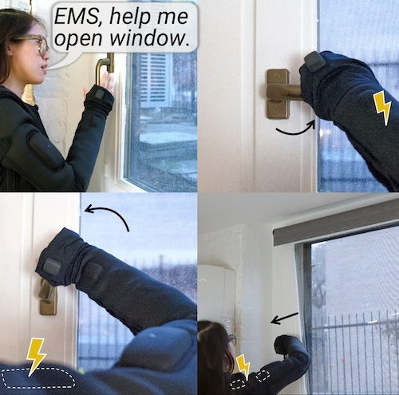

Hi, my name is Steven, and I'm a freshman at Yale. In my free time, I like to sing, bike, and play volleyball. Feel free to reach out to me at stevenhestudent@gmail.com.
Last summer, I was a research intern at the Human-Computer Integration Lab at the University of Chicago. Throughout high school, I worked on a few projects including Eyerobic, EcoSense, and Scio.ly.

Generative Muscle Stimulation: Providing Users with Physical Assistance by Constraining Multimodal-AI with Embodied Knowledge
Yun Ho*, Romain Nith*, Peili Jiang, Steven He, Bruno Felalaga, Shan-Yuan Teng, Rhea Seeralan, Pedro Lopes.
Best Paper Award (top 1%)